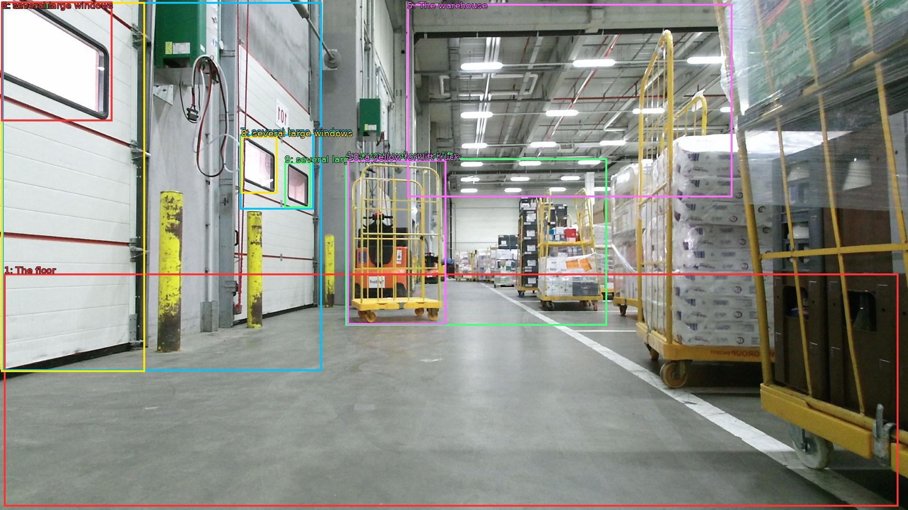

The image shows the interior of a large warehouse or storage facility. The floor is made of concrete and the walls are painted white. On the right side of the image, there are several yellow forklifts with stacks of boxes and pallets on them. The warehouse has a high ceiling with overhead lights and pipes running along it. There are also several large windows on the walls, allowing natural light to enter the space. In the background, there is a yellow forklift truck parked in the center of the warehouse. The overall atmosphere of the space is industrial and busy.

Original · Caption raw · Grounding raw · Koordinate
Številke so lokalni ID regije. Dolge slikovne oznake so skrajšane; spodaj so celotne fraze. Napovedane regije se lahko prekrivajo ali opisujejo skupine.
| ID | Celotna fraza | bbox xyxy |
|---|---|---|
| 1 | The floor | [8.639999389648438, 579.4200439453125, 1899.8399658203125, 1072.9801025390625] |
| 2 | the walls | [4.799999713897705, 4.860000133514404, 680.6400146484375, 785.7000122070312] |
| 3 | the walls | [2.879999876022339, 4.860000133514404, 306.239990234375, 787.8600463867188] |
| 4 | several yellow forklifts | [730.5599975585938, 335.34002685546875, 1283.52001953125, 689.5800170898438] |
| 5 | The warehouse | [861.1199951171875, 8.100000381469727, 1548.47998046875, 417.4200134277344] |
| 6 | several large windows | [2.879999876022339, 3.7800002098083496, 237.1199951171875, 256.5] |
| 7 | several large windows | [507.8399963378906, 284.58001708984375, 663.3599853515625, 443.34002685546875] |
| 8 | several large windows | [509.7599792480469, 288.9000244140625, 586.5599975585938, 409.8600158691406] |
| 9 | several large windows | [601.9199829101562, 343.9800109863281, 657.5999755859375, 440.1000061035156] |
| 10 | a yellow forklift truck | [734.3999633789062, 338.58001708984375, 943.6799926757812, 687.4200439453125] |